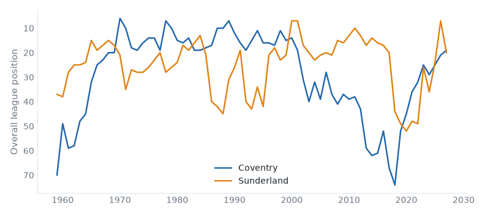
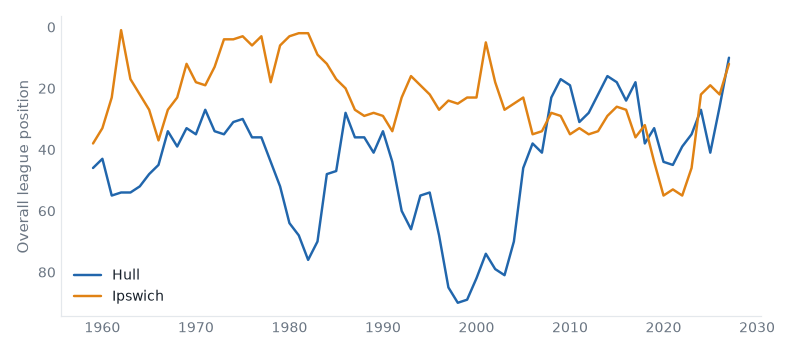
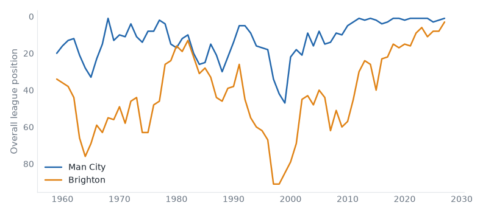
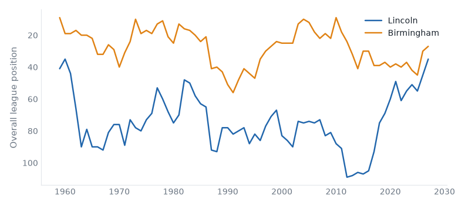
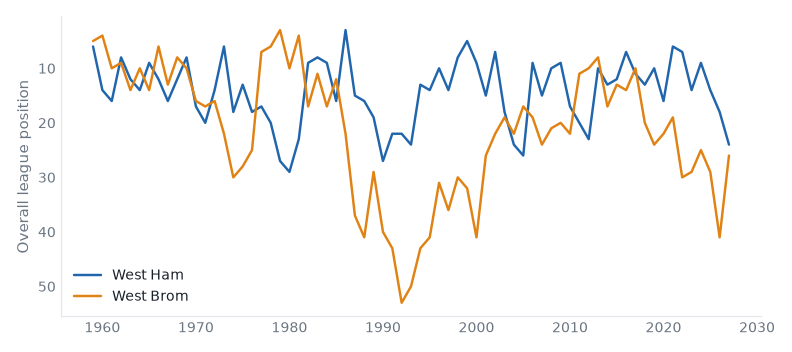
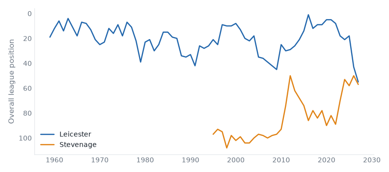

The Week Ahead
58 fixtures across 5 divisions, week of 30 October 2026.
Midweek
League One
| Tue | Leicester | 3–0 | Wigan |
| Tue | Luton | 3–1 | Doncaster |
| Tue | Milton Keynes Dons | 4–1 | Bromley |
| Tue | Oxford | 1–0 | Stockport |
| Tue | Sheffield Weds | 1–1 | Cambridge |
League Two
| Mon | Walsall | 2–4 | Salford |
| Tue | Barnet | 3–1 | York |
National League
| Tue | Altrincham | 0–0 | Kidderminster |
| Tue | Boston Utd | 2–1 | Gateshead |
| Tue | Fylde | 3–1 | Hartlepool |
| Tue | Halifax | 2–3 | Barrow |
| Tue | Hornchurch | 1–2 | Yeovil |
| Tue | Tamworth | 4–1 | Scunthorpe |
| Tue | Wealdstone | 2–3 | Solihull |
| Tue | Woking | 1–2 | Boreham Wood |
| Tue | Worthing | 3–3 | Southend |
| Wed | Carlisle | 3–0 | Harrogate |
| Wed | Forest Green | 2–0 | Eastleigh |
| Wed | Sutton | 2–0 | Aldershot |
Premier League
Coventry host Sunderland in the Premier League on Saturday 31 October. Coventry City live between the Premier League and the Championship; they sit 19th with 6 points from 8 games, form LLWWL. Sunderland live between the Premier League and the Championship; they are 1 division above that this season; they sit 20th with 5 points from 8 games, form DLLLL. They have met 42 times in league play since 1967/68: Coventry City 15 wins, Sunderland 10, 17 drawn.

| Season | Division | Pos | Pts | |
|---|
| 2026/27 | Premier League | 19th | 6 | In progress |
| 2025/26 | Championship | 1st | 95 | Champions |
| 2024/25 | Championship | 5th | 69 | |
| 2023/24 | Championship | 9th | 64 | |
| 2022/23 | Championship | 5th | 70 | |
|
| Season | Division | Pos | Pts | |
|---|
| 2026/27 | Premier League | 20th | 5 | In progress |
| 2025/26 | Premier League | 7th | 54 | |
| 2024/25 | Championship | 4th | 76 | Play-off Promoted |
| 2023/24 | Championship | 16th | 56 | |
| 2022/23 | Championship | 6th | 69 | |
|
Hull host Ipswich in the Premier League on Saturday 31 October. Hull City live between the Championship and League One; this season is their highest since 2017; they sit 10th with 10 points from 8 games, form DLDLD. Ipswich Town live between the Premier League and the Championship; this season is their highest since 2025; they sit 12th with 10 points from 8 games, form DLWLW. They have met 40 times in league play since 1959/60: Hull City 17 wins, Ipswich Town 11, 12 drawn.

| Season | Division | Pos | Pts | |
|---|
| 2026/27 | Premier League | 10th | 10 | In progress |
| 2025/26 | Championship | 6th | 73 | Play-off Promoted |
| 2024/25 | Championship | 21st | 49 | |
| 2023/24 | Championship | 7th | 70 | |
| 2022/23 | Championship | 15th | 58 | |
|
| Season | Division | Pos | Pts | |
|---|
| 2026/27 | Premier League | 12th | 10 | In progress |
| 2025/26 | Championship | 2nd | 84 | Promoted |
| 2024/25 | Premier League | 19th | 22 | Relegated |
| 2023/24 | Championship | 2nd | 96 | Promoted |
| 2022/23 | League One | 2nd | 98 | Promoted |
|
Man City host Brighton in the Premier League on Saturday 31 October. Manchester City belong in the Premier League — 83% of their 69 recorded seasons; they sit 1st with 21 points from 8 games, form LWWWW. Brighton & Hove Albion are, on the balance of their record, a Championship club; they are 10 seasons into a spell 1 division above that; they sit 3rd with 16 points from 8 games, form LWWWW. They have met 32 times in league play since 1979/80: Manchester City 19 wins, Brighton & Hove Albion 6, 7 drawn.

| Season | Division | Pos | Pts | |
|---|
| 2026/27 | Premier League | 1st | 21 | In progress |
| 2025/26 | Premier League | 2nd | 78 | |
| 2024/25 | Premier League | 3rd | 71 | |
| 2023/24 | Premier League | 1st | 91 | Champions |
| 2022/23 | Premier League | 1st | 89 | Champions |
|
| Season | Division | Pos | Pts | |
|---|
| 2026/27 | Premier League | 3rd | 16 | In progress |
| 2025/26 | Premier League | 8th | 53 | |
| 2024/25 | Premier League | 8th | 61 | |
| 2023/24 | Premier League | 11th | 48 | |
| 2022/23 | Premier League | 6th | 62 | |
|
Bournemouth v Leeds
Sat 31 Oct · 2 above level compare
Bournemouth 13th (WWLLD), Leeds United 7th (DDLDW). At least one of them sits above where their record says they belong.
Brentford v Nott'm Forest
Sat 31 Oct · 2 above level compare
Brentford 6th (DLDWD), Nottingham Forest 18th (DLLLW). At least one of them sits above where their record says they belong.
Tottenham v Crystal Palace
Sat 31 Oct · above level compare
Tottenham Hotspur 14th (WWDLD), Crystal Palace 17th (LLWDL). At least one of them sits above where their record says they belong.
| Sat 31 | Aston Villa v Fulham | above level | compare |
| Sat 31 | Chelsea v Man United | | compare |
| Sun 01 | Liverpool v Arsenal | neighbours | compare |
| Mon 02 | Newcastle v Everton | neighbours | compare |
Championship
Lincoln host Birmingham in the Championship on Saturday 31 October. Lincoln City live between League One and League Two; this season is their highest since 1961; they sit 15th with 15 points from 12 games, form WDLLL. Birmingham City live between the Premier League and the Championship; they sit 7th with 20 points from 12 games, form LWWWD. They have met 2 times in league play since 2024/25: Lincoln City 0 wins, Birmingham City 2, 0 drawn.

| Season | Division | Pos | Pts | |
|---|
| 2026/27 | Championship | 15th | 15 | In progress |
| 2025/26 | League One | 1st | 103 | Champions |
| 2024/25 | League One | 11th | 61 | |
| 2023/24 | League One | 7th | 74 | |
| 2022/23 | League One | 11th | 62 | |
|
| Season | Division | Pos | Pts | |
|---|
| 2026/27 | Championship | 7th | 20 | In progress |
| 2025/26 | Championship | 10th | 64 | |
| 2024/25 | League One | 1st | 111 | Champions |
| 2023/24 | Championship | 22nd | 50 | Relegated |
| 2022/23 | Championship | 17th | 53 | |
|
West Ham host West Brom in the Championship on Saturday 31 October. West Ham United belong in the Premier League — 86% of their 69 recorded seasons; they are 1 division below that now; they sit 4th with 22 points from 12 games, form LWWDD. West Bromwich Albion live between the Premier League and the Championship; they are 1 division below that now; they sit 6th with 21 points from 12 games, form DWWLL. They have met 72 times in league play since 1958/59: West Ham United 27 wins, West Bromwich Albion 27, 18 drawn.

| Season | Division | Pos | Pts | |
|---|
| 2026/27 | Championship | 4th | 22 | In progress |
| 2025/26 | Premier League | 18th | 39 | Relegated |
| 2024/25 | Premier League | 14th | 43 | |
| 2023/24 | Premier League | 9th | 52 | |
| 2022/23 | Premier League | 14th | 40 | |
|
| Season | Division | Pos | Pts | |
|---|
| 2026/27 | Championship | 6th | 21 | In progress |
| 2025/26 | Championship | 21st | 51 | |
| 2024/25 | Championship | 9th | 64 | |
| 2023/24 | Championship | 5th | 75 | |
| 2022/23 | Championship | 9th | 66 | |
|
| Fri 30 | Sheffield United v Wrexham | 2 above level | compare |
| Sat 31 | Bolton v Bristol City | yo-yo club | compare |
| Sat 31 | Burnley v Portsmouth | yo-yo club | compare |
| Sat 31 | Middlesbrough v Charlton | | compare |
| Sat 31 | Millwall v Derby | yo-yo club | compare |
| Sat 31 | Norwich v Watford | neighbours | compare |
| Sat 31 | Southampton v QPR | below level | compare |
| Sat 31 | Stoke v Preston | yo-yo club | compare |
| Sat 31 | Swansea v Blackburn | above level | compare |
| Sat 31 | Wolves v Cardiff | yo-yo club | compare |
League One
Leicester host Stevenage in League One on Saturday 31 October. Leicester City live between the Premier League and the Championship; they are 2 divisions below that now; they sit 11th with 18 points from 12 games, form WLWWL. Stevenage live between League Two and the National League; they are 4 seasons into a spell 1 division above that; they sit 13th with 15 points from 11 games, form LWLWL.

| Season | Division | Pos | Pts | |
|---|
| 2026/27 | League One | 11th | 18 | In progress |
| 2025/26 | Championship | 23rd | 46 | Relegated |
| 2024/25 | Premier League | 18th | 25 | Relegated |
| 2023/24 | Championship | 1st | 97 | Champions |
| 2022/23 | Premier League | 18th | 34 | Relegated |
|
| Season | Division | Pos | Pts | |
|---|
| 2026/27 | League One | 13th | 15 | In progress |
| 2025/26 | League One | 6th | 75 | |
| 2024/25 | League One | 14th | 57 | |
| 2023/24 | League One | 9th | 71 | |
| 2022/23 | League Two | 2nd | 85 | Promoted |
|
Stockport v AFC Wimbledon
Sat 31 Oct · above level compare
Stockport County 2nd (LDWWW), AFC Wimbledon 17th (DLLLD). At least one of them sits above where their record says they belong.
Wigan v Bromley
Sat 31 Oct · fallen giant compare
Wigan Athletic 24th (LLLWL), Bromley 22nd (LDLLL). Wigan Athletic have played in the top flight.
| Sat 31 | Barnsley v Oxford | fallen giant | compare |
| Sat 31 | Bradford v Huddersfield | fallen giant | compare |
| Sat 31 | Leyton Orient v Cambridge | fallen giant | compare |
| Sat 31 | Mansfield v Notts County | fallen giant | compare |
| Sat 31 | Milton Keynes Dons v Doncaster | above level | compare |
| Sat 31 | Peterboro v Luton | fallen giant | compare |
| Sat 31 | Plymouth v Reading | fallen giant | compare |
| Sat 31 | Wycombe v Burton | above level | compare |
| Sun 01 | Sheffield Weds v Blackpool | fallen giant | compare |
League Two
Fleetwood Town v Bristol Rvs
Sat 31 Oct · below level compare
Fleetwood Town 18th (LLWDL), Bristol Rovers 15th (DLLLL). At least one of them sits below where their record says they belong.
Shrewsbury v Gillingham
Sat 31 Oct · below level compare
Shrewsbury Town 10th (DWWLW), Gillingham 12th (LDLWD). At least one of them sits below where their record says they belong.
| Fri 30 | Newport County v Chesterfield | below level | compare |
| Sat 31 | Accrington v Northampton | fallen giant | compare |
| Sat 31 | Colchester v Walsall | below level | compare |
| Sat 31 | Crewe v Barnet | above level | compare |
| Sat 31 | Grimsby v York | below level | compare |
| Sat 31 | Oldham v Crawley Town | fallen giant | compare |
| Sat 31 | Port Vale v Rochdale | below level | compare |
| Sat 31 | Salford v Exeter | relegated last season | compare |
| Sat 31 | Swindon v Rotherham | fallen giant | compare |
| Sat 31 | Tranmere v Cheltenham | below level | compare |
National League
Fylde v Hornchurch
Fri 30 Oct · 2 above level compare
AFC Fylde 7th (WLWLL), Hornchurch 13th (LLWLW). At least one of them sits above where their record says they belong.
| Sat 31 | Aldershot v Gateshead | below level | compare |
| Sat 31 | Altrincham v Carlisle | fallen giant | compare |
| Sat 31 | Barrow v Eastleigh | relegated last season | compare |
| Sat 31 | Boreham Wood v Hartlepool | below level | compare |
| Sat 31 | Boston Utd v Scunthorpe | below level | compare |
| Sat 31 | Forest Green v Harrogate | relegated last season | compare |
| Sat 31 | Halifax v Yeovil | below level | compare |
| Sat 31 | Solihull v Kidderminster | | compare |
| Sat 31 | Tamworth v Woking | | compare |
| Sat 31 | Wealdstone v Southend | 2 below level | compare |
| Sat 31 | Worthing v Sutton | 2 above level | compare |
Reviewed on
Monday review, tiers 1–2 and Tuesday review, tiers 3–5.
Built from the English football database, tiers 1–5 from 1958/59.
Results from football-data.co.uk.
Archived copy.